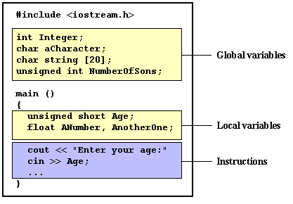

|
Section 1.2 Variables. Data types. Constants. |
 |
|
| |
|
Section 1.2 Variables. Data types. Constants. |
|
|
| |
The usefulness of the "Hello World" programs shown in the previous section are something more than questionable. Since we have had to write several lines of code, compile them, and then execute the resulting program to obtain just a sentence on the screen as result. It is true, but programming is not limited only to print texts on screen, it would be much faster to simply write the output sentence by ourselves. In order to go a little further on and to become able to write programs that perform useful tasks that really save us work we need to introduce the concept of variable.
Let's think that I ask you to retain number 5 in your mental memory, and then I ask you to memorize also number 2. You have just stored two values in your memory. Now, if I ask you to add 1 to the first number I said, you should be retaining numbers 6 (that is 5+1) and 2 in your memory. Values that now we could subtract and obtain 4 as result.
All this process that you have made is a simil of what a computer can do with two variables. This same process can be expressed in C++ with the following instruction set:
a = 5; b = 2; a = a + 1; result = a - b;
Obviously this is a very simple example since we have only used two small integer values, but consider that your computer can store several million of numbers like these at the same time and conduct sophisticated mathematical operations with them.
Therefore, we can define a variable as a portion of memory to store a determined value.
Each variable needs an identifier that distinguishes it from the others, for example, in the previous code the variable identifiers were a, b and result, but we could have called the variables with any name we have wanted to invent, whenever they were valid identifiers.
Neither spaces nor marked letters can be part of an identifier. Only letters, digits and underline characters are valid. In addition, variable identifiers should always begin with a letter. They can also begin with an underline character ( _ ), but this is usually reserved for external links. In no case they can begin with a digit.
Another rule that you have to consider when inventing your own identifiers is that they cannot match with any language's key word nor your compiler's specific ones since they could be confused with these, for example, the following expressions are always considered key words according to the ANSI-C++ standard and therefore they must not be used as identifiers:
asm, auto, bool, break, case, catch, char, class, const, const_cast, continue, default, delete, do, double, dynamic_cast, else, enum, explicit, extern, false, float, for, friend, goto, if, inline, int, long, mutable, namespace, new, operator, private, protected, public, register, reinterpret_cast, return, short, signed, sizeof, static, static_cast, struct, switch, template, this, throw, true, try, typedef, typeid, typename, union, unsigned, using, virtual, void, volatile, wchar_tAdditionally, alternative representations for some operators do not have to be used as identifiers since they are reserved words under some circumstances:
and, and_eq, bitand, bitor, compl, not, not_eq, or, or_eq, xor, xor_eqyour compiler may also include some more specific reserved keywords. For example, many compilers which generate 16bits code (like some compilers for DOS) include also far, huge and near as key words.
Very important: The C++ language is "case sensitive", that means that a same identifier written in capital letters is not equivalent to another one with the same name but written in small letters. Thus, for example the variable RESULT is not the same one that the variable result nor variable Result.
Our computer's memory is organized in bytes. A byte is the minimum amount of memory which we can manage. A byte can store a relatively small amount of data, usually an integer between 0 and 255 or one single character. But in addition, the computer can manipulate more complex data types that come from grouping several bytes, like long numbers or numbers with decimals. Next you have a list of the existing fundamental data types in C++, as well as the range of values that can be represented with each one of them:
| Name | Bytes* | Description | Range* |
| char | 1 | character or integer 8 bits length. | signed: -128 to 127 unsigned: 0 to 255 |
| short | 2 | integer 16 bits length. | signed: -32768 to 32767 unsigned: 0 to 65535 |
| long | 4 | integer 32 bits length. | signed:-2147483648 to 2147483647 unsigned: 0 to 4294967295 |
| int | * | Integer. Its length traditionally depends on the length of the system's Word type, thus in MSDOS it is 16 bits long, whereas in 32 bit systems (like Windows 9x/2000/NT and systems that work under protected mode in x86 systems) it is 32 bits long (4 bytes). | See short, long |
| float | 4 | floating point number. | 3.4e + / - 38 (7 digits) |
| double | 8 | double precision floating point number. | 1.7e + / - 308 (15 digits) |
| long double | 10 | long double precision floating point number. | 1.2e + / - 4932 (19 digits) |
| bool | 1 | Boolean value. It can take one of two values: true or false NOTE: this is a type recently added by the ANSI-C++ standard. Not all compilers support it. Consult section bool type for compatibility information. | true or false |
| wchar_t | 2 | Wide character. It is designed as a type to store international characters of a two-byte character set. NOTE: this is a type recently added by the ANSI-C++ standard. Not all compilers support it. | wide characters |
In addition to these fundamental data types there also exist the pointers and the void parameter type specification, that we will see later.
int a;Are valid declarations of variables. The first one declares a variable of type int with the identifier a. The second one declares a variable of type float with the identifier mynumber. Once declared, variables a and mynumber can be used within the rest of their scope in the program.
float mynumber;
If you need to declare several variables of the same type and you want to save some
writing work you can declare all of them in the same line separating the identifiers
with commas. For example:
int a, b, c;declares three variables (a, b and c) of type int , and has exactly the same meaning as if we had written:
int a;
int b;
int c;
Integer data types (char, short, long and int) can be signed or unsigned according to the range of numbers that we need to represent. Thus to specify an integer data type we do it by putting the keyword signed or unsigned before the data type itself. For example:
unsigned short NumberOfSons;By default, if we do not specify signed or unsigned it will be assumed that the type is signed, thus in the second declaration we could have written:
signed int MyAccountBalance;
int MyAccountBalance;with exactly the same meaning and being this last one the most usual, in fact, few source codes include the keyword signed as part of a compound type name.
The only exception to this rule is the char type that exists by itself and it is considered a diferent type than signed char and unsigned char.
Finally, signed and unsigned may also be used as a simple types, meaning the same as signed int and unsigned int respectivelly. The following two declarations are equivalent:
unsigned MyBirthYear;
unsigned int MyBirthYear;
To see in action how looks like a declaration in a program, we are going to see the C++ code of the example about your mental memory proposed at the beginning of this section:
// operating with variables
#include <iostream.h>
int main ()
{
// declaring variables:
int a, b;
int result;
// process:
a = 5;
b = 2;
a = a + 1;
result = a - b;
// print out the result:
cout << result;
// terminate the program:
return 0;
}
| 4 |
Do not worry if something out of the varibale declarations sounds a bit strange to you. You will see the rest in detail in coming sections.
type identifier = initial_value ;For example, if we want to declare an int variable called a that contains the value 0 since the moment in which it is declared, we could write:
int a = 0;
Additionally to this way of initializating variables (known as c-like), C++ has added a new way to initialize a variable: by enclosing the initial value between parenthesis ():
type identifier (initial_value) ;For example:
int a (0);Both ways are valid and equivalent in C++.
Anyway, it can be recommendable under some circumstances to follow the indications of the C language when declaring variables, since it can be useful at the time of debugging a program to have all the declarations grouped together. Therefore, the traditional C-like way to declare variables is to include their declaration at the beginning of each function (for local variables) or directly in the body of the program outside any function (for global variables).
|

Global variables can be referred anywhere in the code, within any function,
whenever it is after its declaration.
The scope of the local variables is limited to the code level in which they are declared. If they are declared at the beginning of a function (like in main) its scope is the whole main function. This means that if in the example above, moreover than the function main() another function existed, the local variables declared in main could not be used in the other function and vice versa. In C++, the scope of a local variable is given by the block in which it is declared (a block is a group of instructions grouped together within curly brackets {} signs). If it is declared within a function it will be a variable with function scope, if it is declared in a loop its scope will be only the loop, etc... In addition to local and global scopes exists the external scope, that causes a variable to be visible not only in the same source file but in all other files which will be linked together with. |
Integer Numbers
1776they are numerical constants that identify integer decimal numbers. Notice that to express a numerical constant we do not need to write quotes (") nor any special character. There is no doubt that it is a constant: whenever we write 1776 in a program we will be referring to the value 1776.
707
-273
In addition to decimal numbers (those that all of us already know) C++ allows the use as literal constants of octal numbers (base 8) and hexadecimal numbers (base 16). If we want to express an octal number we must precede it with a 0 character (zero character). And to express a hexadecimal number we have to precede it with the characters 0x (zero, x). For example, the following literal constants are all equivalent to each other:
All of them represent the same number: 75 (seventy five) expressed as a radix-10 number, octal and hexdecimal, respectively.75 // decimal 0113 // octal 0x4b // hexadecimal
[ Note: You can find more information on hexadecimal and octal representations in the document Numerical radixes]
Floating Point Numbers
They express numbers with decimals and/or exponent. They can include a decimal point, an
e character (that expresses "by ten at the Xth height", where X is the
following integer value) or both.
these are four valid numbers with decimals expressed in C++. The first number is PI, the second one is the number of Avogadro, the third is the electric charge of an electron (an extremely small number) -all of them approximated- and the last one is the number 3 expressed as a floating point numeric literal.3.14159 // 3.14159 6.02e23 // 6.02 x 1023 1.6e-19 // 1.6 x 10-19 3.0 // 3.0
Characters and strings
There also exist non-numerical constants, like:
'z'The first two expressions represent single characters, and the following two represent strings of several characters. Notice that to represent a single character we enclose it between single quotes (') and to express a string of more than one character we enclose them between double quotes (").
'p'
"Hello world"
"How do you do?"
When writing both single characters and strings of characters in a constant way, it is necessary to put the quotation marks to distinguish them from possible variable identifiers or reserved words. Notice this:
xx refers to variable x, whereas 'x' refers to the character constant 'x'.
'x'
Character constants and string constants have certain peculiarities, like the escape codes. These are special characters that cannot be expressed otherwise in the sourcecode of a program, like newline (\n) or tab (\t). All of them are preceded by an inverted slash (\). Here you have a list of such escape codes:
For example:
\n newline \r carriage return \t tabulation \v vertical tabulation \b backspace \f page feed \a alert (beep) \' single quotes (') \" double quotes (") \ question (?) \\ inverted slash (\)
'\n'Additionally, you can express any character by its numerical ASCII code by writing an inverted slash bar character (\) followed by the ASCII code expressed as an octal (radix-8) or hexadecimal (radix-16) number. In the first case (octal) the number must follow immediately the inverted slash (for example \23 or \40), in the second case (hexacedimal), you must put an x character before the number (for example \x20 or \x4A).
'\t'
"Left \t Right"
"one\ntwo\nthree"
coonstants of string of characters can be extended by more than a single code line if each code line ends with an inverted slash (\):
"string expressed in \You can also concatenate several string constants separating them by one or several blankspaces, tabulators, newline or any other valid blank character:
two lines"
"we form" "a single" "string" "of characters"
#define identifier valueFor example:
#define PI 3.14159265they define three new constants. Once they are declared, you are able to use them in the rest of the code as any if they were any other constant, for example:
#define NEWLINE '\n'
#define WIDTH 100
circle = 2 * PI * r;In fact the only thing that the compiler does when it finds #define directives is to replace literally any occurrence of the them (in the previous example, PI, NEWLINE or WIDTH) by the code to which they have been defined (3.14159265, 'n' and 100, respectively). For this reason, #define constants are considered macro constants.
cout << NEWLINE;
The #define directive is not a code instruction, it is a directive for the preprocessor, reason why it assumes the whole line as the directive and does not require a semicolon (;) at the end of it. If you include a semicolon character (;) at the end, it will also be added when the preprocessor will substitute any occurence of the defined constant within the body of the program.
const int width = 100;In case that the type was not specified (as in the last example) the compiler assumes that it is type int.
const char tab = '\t';
const zip = 12440;
| © The C++ Resources Network, 2000-2001 - All rights reserved |
 Previous:
Previous:1-1. Structure of a C++ program. |
 index |
 Next:
Next:1-3. Operators. |